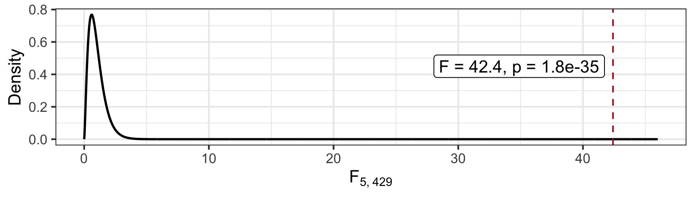
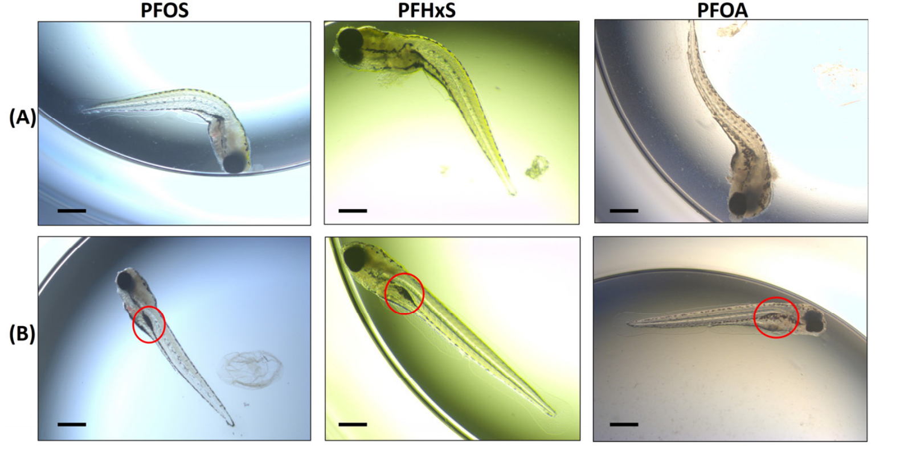
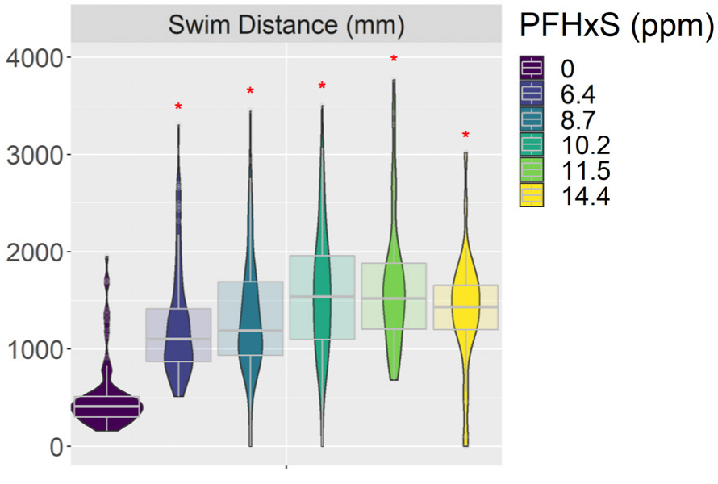
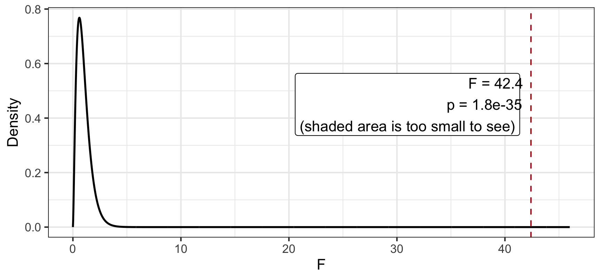

EDS 222: Statistics for Environmental Data Science
Week 6 Monday
ANOVA
Today’s agenda
- Describe questions ANOVA can answer
- Compare models using ANOVA
- Apply ANOVA across scenarios
Describe questions ANOVA can answer
Forever chemicals

PFAS (per- and polyfluoroalkyl substances) enter the environment through multiple pathways, but do not break down like most chemicals.
Do PFAS affect developing nervous systems?
Albers et al. (2024) raised zebrafish embryos in water with one of three PFAS: PFOA, PFOS, or PFHxS.

Zebrafish (Danio rerio) are a model vertebrate for toxicology: they develop fast and their embryos are transparent. Credit: Powers Scientific
Some effects you can see

Spine curvature (A) and un- or underinflated swim bladders (B) in 120-hour-old embryos (Albers et al. 2024)
Some effects you can’t
Neurological effects show up in behavior.
- At 120 hours, each larva sat in its own well in a dark chamber
- The lights switched on and off every 3 minutes for 24 minutes, startling the fish
- A camera tracked each larva 30 times per second
- Larvae that were dead or had visible deformities were excluded, so a bent spine can’t explain slow swimming
One response: total swim distance (mm) during the test.
Swim distance by PFHxS concentration

The model
Treat concentration as a categorical predictor with six levels. The control is the reference level.
\[ \begin{aligned} \text{distance} = \beta_0 &+ \beta_1 (\text{PFHxS} = 6.4) + \beta_2 (\text{PFHxS} = 8.7) + \beta_3 (\text{PFHxS} = 10.2) \\ &+ \beta_4 (\text{PFHxS} = 11.5) + \beta_5 (\text{PFHxS} = 14.4) + \varepsilon \end{aligned} \]
- \(\beta_0\): mean swim distance of control fish
- \(\beta_1, \dots, \beta_5\): difference between each concentration and the control
- Why categorical? The pattern isn’t a straight line: a big jump at 6.4 ppm, then roughly flat
Which coefficient answers the question?
Does PFHxS concentration affect fish neurology?
- \(\beta_1\) only compares 6.4 ppm to the control. \(\beta_5\) only compares 14.4 ppm to the control.
- Each coefficient is one comparison. The question is about all of them at once:
- \(H_0\): \(\beta_1 = \beta_2 = \beta_3 = \beta_4 = \beta_5 = 0\) (every concentration has the same mean)
- \(H_A\): at least one \(\beta_k \neq 0\)
Why not check all five p-values?
- Each test has a 5% chance of a false positive when there is no effect
- With five tests, the chance that at least one has p < 0.05 is closer to \(1 - 0.95^5 \approx 23\%\)
- Picking whichever level looks best is cherry-picking
- The five tests also depend on the reference level. Change the reference and you get five different tests of the same model.
We need one test for the whole predictor.
When to use ANOVA
- The response is continuous (swim distance in mm)
- The question is about a whole predictor, not one coefficient: “Does concentration matter at all?”
- That predictor costs more than one coefficient, like a categorical variable with 3+ levels (6 levels → 5 dummy variables)
ANOVA asks: is the variance explained by the additional parameters worth the cost?
Compare models using ANOVA
One test for the whole predictor
Compare two models:
| Model | Says | Coefficients |
|---|---|---|
distance ~ 1 |
Concentration doesn’t matter: one mean for all the fish | 1 |
distance ~ pfhxs |
Each concentration has its own mean | 6 |
- The complex model always fits better (lower \(RSS\)). It spends 5 more coefficients to do it.
- Does concentration explain enough variation to justify spending 5 df?
Compare the models
\(n = 435\) larvae
| Model | \(p\) | \(df = n - p\) | \(RSS\) (millions of mm²) |
|---|---|---|---|
distance ~ 1 |
1 | 434 | 214.43 |
distance ~ pfhxs |
6 | 429 | 143.50 |
\[ \begin{aligned} F &= \frac{(RSS_{simple} - RSS_{complex}) \ / \ (p_{complex} - p_{simple})}{RSS_{complex} \ / \ (n - p_{complex})} \\[6pt] &= \frac{(214.43 - 143.50) \ / \ (6 - 1)}{143.50 \ / \ (435 - 6)} = \frac{14.19}{0.3345} \approx 42.4 \end{aligned} \]
How surprising is F = 42.4?
Under \(H_0\), the \(F\) statistic follows an F-distribution (rather than normal).

Interpretation
If the means were not different across groups (i.e., if PFHxS had no effect on swim distance), then the probability of observin an F-statistic as large as 42.4 is extremely small. So we reject \(H_0\) and conclude there is evidence that PFHxS affects swim distance.
This means two things:
- At least one group mean differs from at least one other.
- The variation between groups is large relative to the variation within groups.
How to compare models with ANOVA
State your hypotheses
Design your complex and simpler models
Calculate the F-statistic using \(df\) and \(RSS\) to quantify the information-complexity tradeoff
Derive your p-value for your F-statistic using the F-distribution or permutation
State your hypotheses
Does PFHxS concentration affect zebrafish swim distance?
- \(H_0\): \(\beta_1 = \beta_2 = \beta_3 = \beta_4 = \beta_5 = 0\)
- Every concentration has the same mean swim distance as the control
- \(H_A\): at least one \(\beta_k \neq 0\)
- At least one concentration has a different mean
Design your models
| Model | Role | Says | \(p\) |
|---|---|---|---|
distance ~ 1 |
Simpler | One mean for all the fish (\(H_0\)) | 1 |
distance ~ pfhxs |
Complex | Each concentration has its own mean | 6 |
- The simpler model is the complex model with \(\beta_1, \dots, \beta_5\) set to 0, so the models are nested
- They differ by \(6 - 1 = 5\) coefficients: exactly the ones \(H_0\) says are 0
Calculate \(F\)
\(n = 435\) larvae
| Model | \(p\) | \(df = n - p\) | \(RSS\) (millions of mm²) |
|---|---|---|---|
distance ~ 1 |
1 | 434 | 214.43 |
distance ~ pfhxs |
6 | 429 | 143.50 |
\[ F = \frac{(214.43 - 143.50) \ / \ (6 - 1)}{143.50 \ / \ (435 - 6)} = \frac{14.19}{0.3345} \approx 42.4 \]
- Numerator: each df spent on concentration removes 14.19 million mm² of unexplained variation
- Denominator: each remaining df holds 0.3345 million mm² of noise
- Each df spent on concentration buys about 42 times more than a df of noise
Derive the p-value
Mathematical model: The F-statistic follows an F-distribution.
- Permutation: shuffle concentration labels across fish, refit both models, and recompute \(F\). Repeat many times.
- Albers et al. (2024) ran 10 million permutations. None gave an \(F\) as large as 42.4 (reported \(p = 0\)).
- Either way: if PFHxS had no effect, an \(F\) this large would almost never happen. Reject \(H_0\).
Apply ANOVA across scenarios
References
Albers, Janice, John Mylroie, Ashley Kimble, Catherine Steward, Kacy Chapman, Mitchell Wilbanks, Edward Perkins, and Natàlia Garcia-Reyero. 2024. “Per- and Polyfluoroalkyl Substances: Impacts on Morphology, Behavior and Lipid Levels in Zebrafish Embryos.” Toxics 12 (3): 192. https://doi.org/10.3390/toxics12030192.